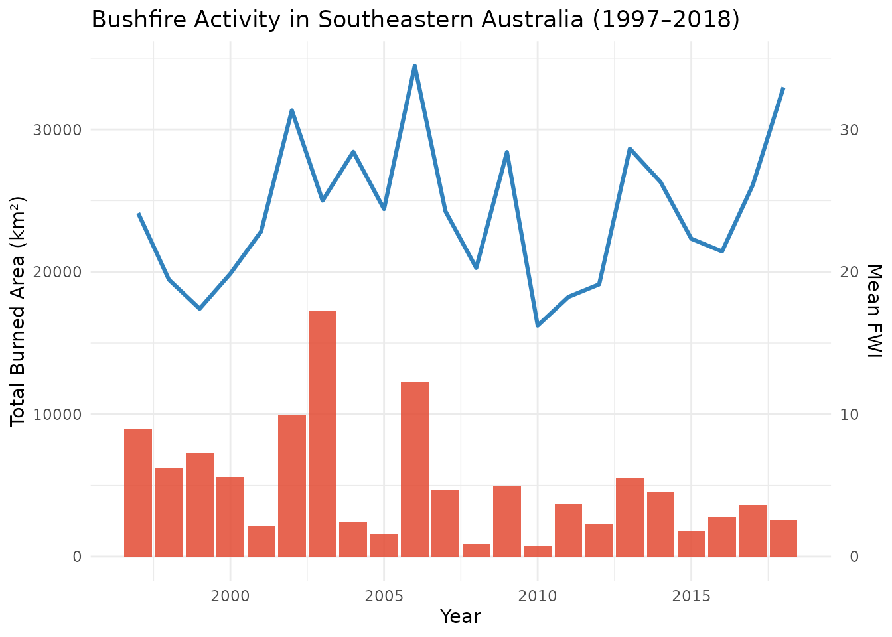
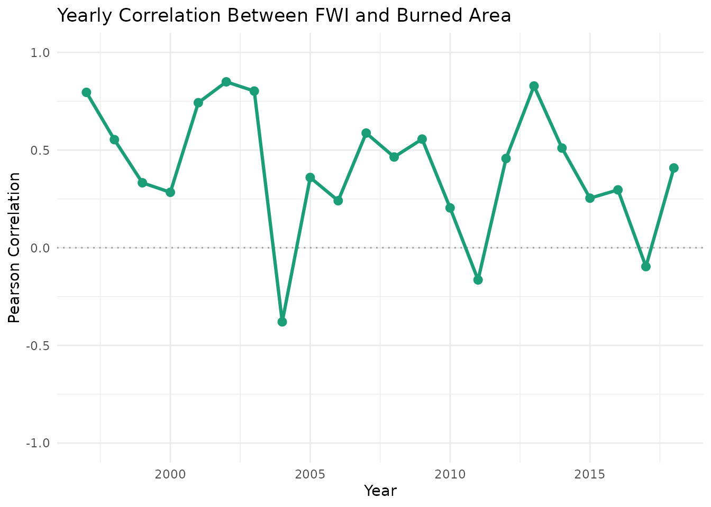

Exploring Bushfire Patterns in Australia with bushfireR
Parth Tendulkar
05 November 2025
intro_bushfire.RmdIntroduction
bushfire is a data exploration package that helps
analyze bushfire trends and fire weather conditions
across southeastern Australia between 1997 and
2018.
It combines two primary data sources — the Fire Weather Index
(FWI) and burned area measurements — to study
long-term climate–fire relationships.
What are bushfires?
Bushfires are uncontrolled fires that burn in natural areas such as forests, grasslands, or scrublands. Their intensity and frequency are heavily influenced by climatic conditions, including temperature, rainfall, wind speed, and humidity.
What is the Fire Weather Index (FWI)?
The Fire Weather Index is a numerical indicator of fire potential, integrating several meteorological factors: - Temperature - Wind speed - Relative humidity - Precipitation
A higher FWI value indicates a greater potential for intense fires.
What does the package offer?
The package includes: - Cleaned and ready-to-use datasets
(bushfire, bushfire_summary, and
pop_est) - Utility functions for summarization and
correlation analysis - An interactive Shiny dashboard
(run_app()) for dynamic exploration and data download
Installation
You can install the package directly from GitHub:
# Install remotes if not already installed
install.packages("remotes")
# Install bushfire from GitHub
remotes::install_github("ETC5523-2025/assignment-4-packages-and-shiny-apps-parthtendulkar10/bushfire")Package Datasets
1. Monthly Bushfire Records — bushfire
This dataset contains monthly measurements of Fire Weather Index (FWI) and burned area (in km²) from 1997 to 2018.
data(bushfire)
glimpse(bushfire)
#> Rows: 264
#> Columns: 7
#> $ x1.x <dbl> 1, 2, 3, 4, 5, 6, 7, 8, 9, 10, 11, 12, 13, 14, 15, 16,…
#> $ year <dbl> 1997, 1997, 1997, 1997, 1997, 1997, 1997, 1997, 1997, …
#> $ month <chr> "Jan", "Feb", "Mar", "Apr", "May", "Jun", "Jul", "Aug"…
#> $ fwi <dbl> 30.259860, 19.821030, 25.781990, 29.117420, 25.122560,…
#> $ x1.y <dbl> 1, 2, 3, 4, 5, 6, 7, 8, 9, 10, 11, 12, 13, 14, 15, 16,…
#> $ burned_area_km2 <dbl> 558.62980, 102.87020, 244.26460, 1388.16300, 531.09150…
#> $ date <date> 1997-01-01, 1997-02-01, 1997-03-01, 1997-04-01, 1997-…
head(bushfire)
#> # A tibble: 6 × 7
#> x1.x year month fwi x1.y burned_area_km2 date
#> <dbl> <dbl> <chr> <dbl> <dbl> <dbl> <date>
#> 1 1 1997 Jan 30.3 1 559. 1997-01-01
#> 2 2 1997 Feb 19.8 2 103. 1997-02-01
#> 3 3 1997 Mar 25.8 3 244. 1997-03-01
#> 4 4 1997 Apr 29.1 4 1388. 1997-04-01
#> 5 5 1997 May 25.1 5 531. 1997-05-01
#> 6 6 1997 Jun 8.52 6 202. 1997-06-01Key variables: - year: Observation year
(1997–2018)
- month: Numeric month indicator (1–12)
- fwi: Fire Weather Index value (numeric)
- burned_area_km2: Total burned area in km²
2. Yearly Summary — bushfire_summary
This dataset aggregates the monthly data to provide yearly averages of FWI and total burned area.
data(bushfire_summary)
glimpse(bushfire_summary)
#> Rows: 22
#> Columns: 3
#> $ year <dbl> 1997, 1998, 1999, 2000, 2001, 2002, 2003, 2004, 2005,…
#> $ mean_fwi <dbl> 24.12708, 19.45344, 17.41241, 19.87861, 22.84019, 31.…
#> $ total_burned_km2 <dbl> 8996.4837, 6257.1149, 7314.2914, 5581.9432, 2122.0622…
head(bushfire_summary)
#> # A tibble: 6 × 3
#> year mean_fwi total_burned_km2
#> <dbl> <dbl> <dbl>
#> 1 1997 24.1 8996.
#> 2 1998 19.5 6257.
#> 3 1999 17.4 7314.
#> 4 2000 19.9 5582.
#> 5 2001 22.8 2122.
#> 6 2002 31.3 9974.Key variables: - year: Observation
year
- mean_fwi: Average Fire Weather Index for the year
- total_burned_km2: Total area burned across all months
3. Population Reference Table — pop_est
A small reference dataset used in the dashboard.
data(pop_est)
pop_est
#> # A tibble: 1 × 1
#> total_obs
#> <int>
#> 1 264Quick Start — Launching the Dashboard
bushfireR includes a Shiny dashboard that allows
interactive exploration of trends and correlations.
You can launch it using:
run_app()The dashboard includes two main tabs: 1. Overview – View value boxes summarizing total records, FWI averages, and total burned area, along with a yearly trend chart and summary table. 2. Correlation – Examine how FWI relates to burned area over time, with an overall correlation value, yearly correlation trend, and download options.
Basic Data Exploration
View top records
head(bushfire)
#> # A tibble: 6 × 7
#> x1.x year month fwi x1.y burned_area_km2 date
#> <dbl> <dbl> <chr> <dbl> <dbl> <dbl> <date>
#> 1 1 1997 Jan 30.3 1 559. 1997-01-01
#> 2 2 1997 Feb 19.8 2 103. 1997-02-01
#> 3 3 1997 Mar 25.8 3 244. 1997-03-01
#> 4 4 1997 Apr 29.1 4 1388. 1997-04-01
#> 5 5 1997 May 25.1 5 531. 1997-05-01
#> 6 6 1997 Jun 8.52 6 202. 1997-06-01Check data range
summary(bushfire)
#> x1.x year month fwi
#> Min. : 1.00 Min. :1997 Length:264 Min. : 2.794
#> 1st Qu.: 66.75 1st Qu.:2002 Class :character 1st Qu.:14.384
#> Median :132.50 Median :2008 Mode :character Median :21.677
#> Mean :132.50 Mean :2008 Mean :24.168
#> 3rd Qu.:198.25 3rd Qu.:2013 3rd Qu.:32.481
#> Max. :264.00 Max. :2018 Max. :62.123
#> x1.y burned_area_km2 date
#> Min. : 1.00 Min. : 0.00 Min. :1997-01-01
#> 1st Qu.: 66.75 1st Qu.: 26.32 1st Qu.:2002-06-23
#> Median :132.50 Median : 104.08 Median :2007-12-16
#> Mean :132.50 Mean : 424.34 Mean :2007-12-16
#> 3rd Qu.:198.25 3rd Qu.: 395.34 3rd Qu.:2013-06-08
#> Max. :264.00 Max. :8675.43 Max. :2018-12-01Exploratory Analysis
1. Annual Fire Trends
Visualize how burned area and FWI vary over time:
ggplot(bushfire_summary, aes(x = year)) +
geom_col(aes(y = total_burned_km2), fill = "#e34a33", alpha = 0.85) +
geom_line(aes(y = mean_fwi * 1000), color = "#3182bd", linewidth = 1.1) +
scale_y_continuous(
name = "Total Burned Area (km²)",
sec.axis = sec_axis(~ . / 1000, name = "Mean FWI")
) +
labs(
title = "Bushfire Activity in Southeastern Australia (1997–2018)",
x = "Year"
) +
theme_minimal()
2. Calculate and Visualize Correlation
yearly_corr <- bushfire |>
group_by(year) |>
summarise(corr = cor(fwi, burned_area_km2, use = "complete.obs"), .groups = "drop")
ggplot(yearly_corr, aes(x = year, y = corr)) +
geom_hline(yintercept = 0, linetype = 3, colour = "grey60") +
geom_line(linewidth = 1.1, colour = "#1b9e77") +
geom_point(size = 2.5, colour = "#1b9e77") +
scale_y_continuous(limits = c(-1, 1)) +
labs(title = "Yearly Correlation Between FWI and Burned Area",
x = "Year", y = "Pearson Correlation") +
theme_minimal()
3. Identify Extreme Years
Find years with the highest FWI and largest burned area:
top_burned <- bushfire_summary |> arrange(desc(total_burned_km2)) |> head(5)
top_fwi <- bushfire_summary |> arrange(desc(mean_fwi)) |> head(5)
top_burned
#> # A tibble: 5 × 3
#> year mean_fwi total_burned_km2
#> <dbl> <dbl> <dbl>
#> 1 2003 25.0 17268.
#> 2 2006 34.5 12317.
#> 3 2002 31.3 9974.
#> 4 1997 24.1 8996.
#> 5 1999 17.4 7314.
top_fwi
#> # A tibble: 5 × 3
#> year mean_fwi total_burned_km2
#> <dbl> <dbl> <dbl>
#> 1 2006 34.5 12317.
#> 2 2018 33.0 2584.
#> 3 2002 31.3 9974.
#> 4 2013 28.7 5517.
#> 5 2004 28.4 2449.4. Derived Indicator — Fire Intensity Index
Create a simple ratio of FWI to burned area to identify unusually intense conditions.
bushfire_summary |>
mutate(intensity_index = mean_fwi / pmax(total_burned_km2, 1)) |>
arrange(desc(intensity_index)) |>
head(5)
#> # A tibble: 5 × 4
#> year mean_fwi total_burned_km2 intensity_index
#> <dbl> <dbl> <dbl> <dbl>
#> 1 2008 20.3 867. 0.0234
#> 2 2010 16.2 763. 0.0213
#> 3 2005 24.4 1570. 0.0156
#> 4 2018 33.0 2584. 0.0128
#> 5 2015 22.3 1809. 0.0123Example Analysis — Combined Exploration
Combine multiple metrics to observe long-term patterns:
combined <- bushfire_summary |>
mutate(
intensity_index = mean_fwi / pmax(total_burned_km2, 1),
scaled_fwi = scale(mean_fwi),
scaled_area = scale(total_burned_km2)
)
ggplot(combined, aes(x = year)) +
geom_line(aes(y = scaled_fwi), colour = "#3182bd", linewidth = 1.2) +
geom_line(aes(y = scaled_area), colour = "#e34a33", linewidth = 1.2, linetype = 2) +
labs(
title = "Standardized Fire Weather Index vs Burned Area",
x = "Year", y = "Scaled Values"
) +
theme_minimal()
Best Practices
- Always check data consistency – Fire data often contain gaps or outliers due to satellite coverage and reporting errors.
-
Analyze relative changes – Comparing percentage
changes year-over-year gives better context than absolute numbers.
-
Consider weather context – High FWI doesn’t always
lead to more fires; ignition sources and vegetation play roles
too.
-
Use correlations descriptively – Correlation shows
association, not causation.
- Leverage the dashboard – It provides quick summaries and export options for reproducible analysis.
Next Steps
- Launch the app with
run_app()to explore interactively.
- Use
?bushfire_summaryand?bushfirefor dataset documentation.
- Integrate this data into broader environmental or climate studies.
References
- Van Wagner, C.E. (1987). Development and Structure of the
Canadian Forest Fire Weather Index System. Forestry Technical
Report 35.
- Australian Bureau of Meteorology (BoM). Fire Weather Services
and Index Methodology.
- ERA5 Climate Reanalysis Data (1997–2018). European Centre for Medium-Range Weather Forecasts (ECMWF).